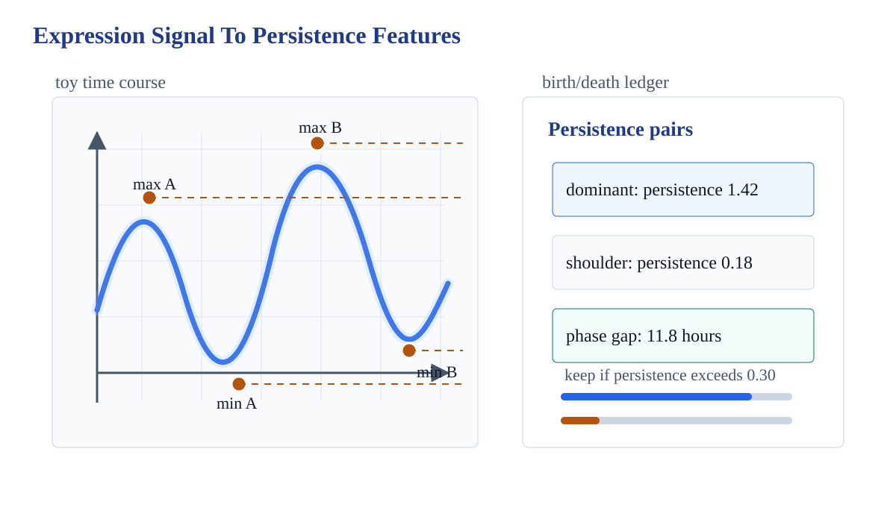
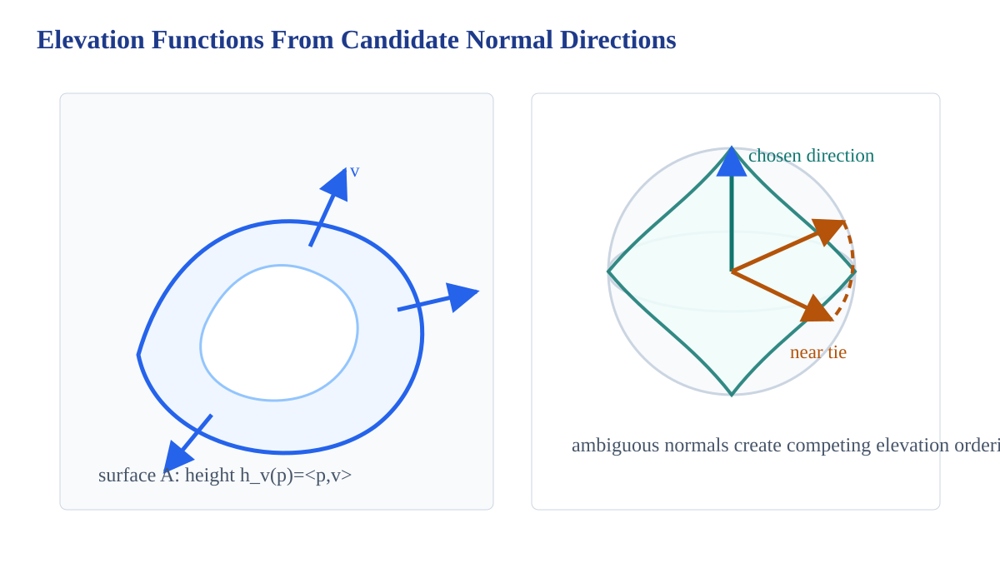
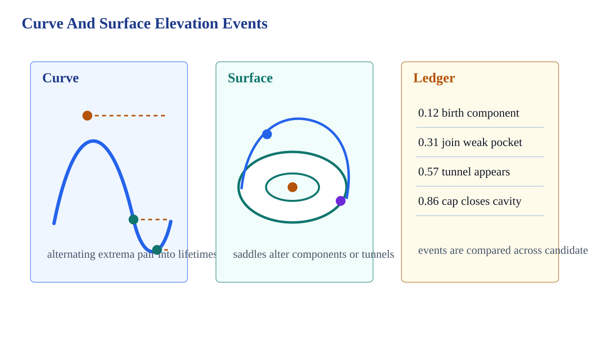
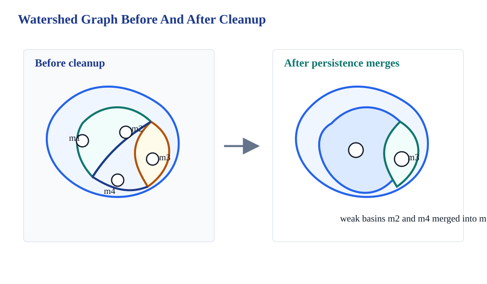
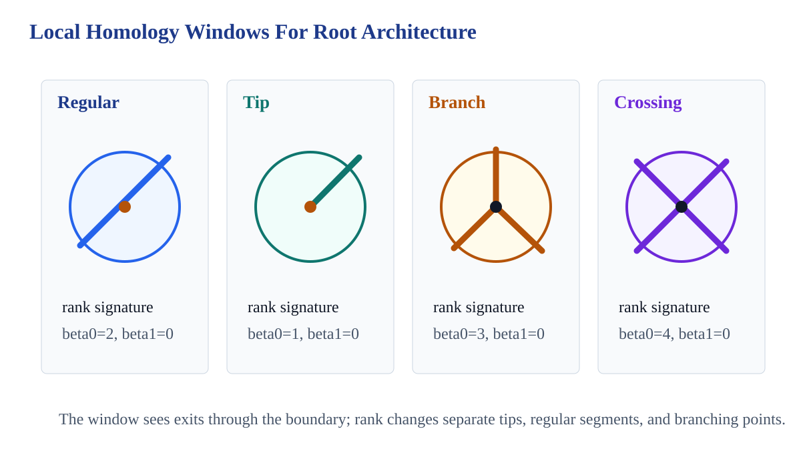
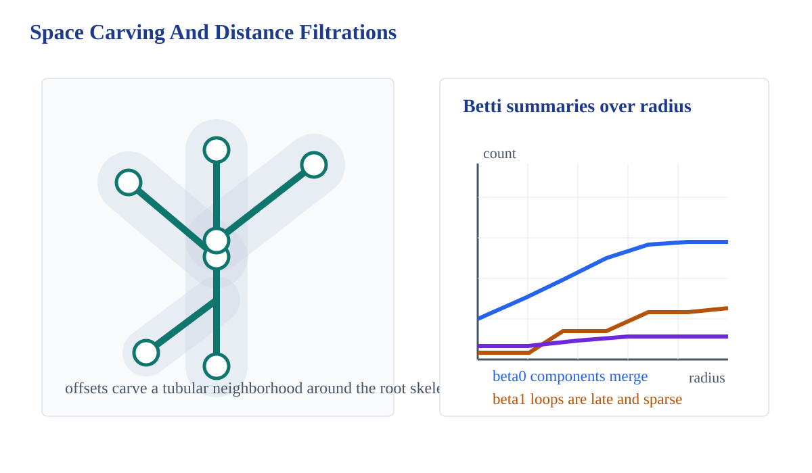

Chapter-wide pattern
A successful application records both the invariant and the measurement protocol that produced it. The invariant without the protocol is not reproducible; the protocol without the invariant is not topological.
IX.1 Gene expression

\( f_g(t)=\) expression level of gene \(g\) at time \(t\)
A periodic candidate should have a dominant oscillation whose lifetime survives sampling noise and small perturbations.
IX.1 Gene expression
Cancel a local oscillation only after naming the pair and threshold. The simplified signal is not smoother by taste; it is smoother because a short persistence interval has been removed.
keep if \(d-b \ge \tau\)
For the toy signal, the dominant oscillation has lifetime 1.42 and the shoulder has lifetime 0.18. With \(\tau=0.30\), the shoulder is removed and the main cycle remains visible.
IX.1 Gene expression
\(d_B(D(f),D(g)) \le \|f-g\|_\infty\)
A periodicity score should not flip under a perturbation smaller than the margin separating the dominant feature from the threshold.
lifetime of the dominant pair
ratio of secondary to dominant lifetimes
time between paired extrema
distance from perturbation failure
IX.1 Gene expression
| Gene | Dominant | Ratio | Rank |
|---|---|---|---|
| G_clock | 1.42 | 0.13 | 1 |
| G_phase | 0.91 | 0.21 | 2 |
| G_noisy | 0.52 | 0.73 | 3 |
| G_flat | 0.19 | 0.47 | 4 |
\((\ell_1,\ell_2/\ell_1,\Delta t,\ell_1-2\epsilon)\)
The vector separates a strong periodic candidate from noisy or nearly flat signals.
High dominant lifetime and low secondary ratio indicate one clean oscillation rather than many comparable wiggles.
IX.2 Protein docking
Protein docking asks whether complementary surface patches can align without clashes. Computational topology enters by replacing the raw surface with event summaries from elevation functions.
A docking configuration is plausible when geometric complementarity and topological event compatibility point to the same interface.
IX.2 Protein docking

\(h_v(p)=\langle p,v\rangle\)
For a chosen direction \(v\), the surface is swept by height and critical events are recorded.
When two candidate directions produce near-tied event orders, the docking score should not pretend the direction was unique.
IX.2 Protein docking

Event compatibility is evidence, not a docking proof. It must be combined with collision checks and domain-specific constraints.
IX.3 Image segmentation
An image becomes a height function: dark or bright regions act like basins, ridges, and saddles. Watershed segmentation traces which basin each pixel would flow into.
Segmentation is not only boundary detection; it is a controlled simplification of a topographic graph.
IX.3 Image segmentation

Merge low-persistence regions first, then stop at the threshold. This prevents a later strong feature from being swallowed by an earlier local choice.
IX.3 Image segmentation
| Basin | Lifetime | Decision |
|---|---|---|
| m2 | 0.10 | merge into m1 |
| m4 | 0.15 | merge into m1 |
| m3 | 0.60 | keep as region |
The cleanup passes if merge lifetimes are nondecreasing, every basin below threshold is removed, and every kept basin has lifetime at least the threshold.
\(\tau_{\mathrm{seg}}=0.20\)
After cleanup, the segmentation has fewer regions but retains the basin whose persistence is three times the threshold.
IX.3 Image segmentation
Minima create components or candidate basins in a voxel landscape.
Saddles connect components, create loops, or fill weak tunnels depending on dimension.
Maximal cells cap small cavities or record large volumetric events.
Persistence-guided cancellation pairs a \(k\)-cell with a \((k+1)\)-cell when the associated feature is below tolerance. The simplified complex should preserve the high-persistence segmentation structure.
IX.4 Root architectures

Place a window around a point of the root skeleton and compute the rank pattern of the punctured neighborhood. Tips, regular segments, branches, and crossings have different exit counts.
IX.4 Root architectures

\(X_r=\{x: d(x,S)\le r\}\)
The skeleton \(S\) is thickened by radius \(r\). Components merge as branches connect; loops or cavities may appear when imaging artifacts create cycles.
In the toy ledger, beta0 drops from 7 to 1 as radius grows, while beta1 appears late and remains sparse.
Chapter synthesis
1. Name the data model and the units of measurement.
2. Choose the function and state its perturbation tolerance.
3. Record the filtration order and all persistence pairings.
4. Separate simplification thresholds from scientific decisions.
5. Keep a failure case for each modeling hypothesis.
Genes rank oscillations, docking compares elevation events, images merge basins, and roots classify local architecture. The visible object changes; the audit trail stays the same.
Applied computational topology is strongest when invariants are treated as measurements with provenance, stability checks, and cancellation ledgers.
{kind=link}
{kind=link}
{kind=link}
{kind=link}